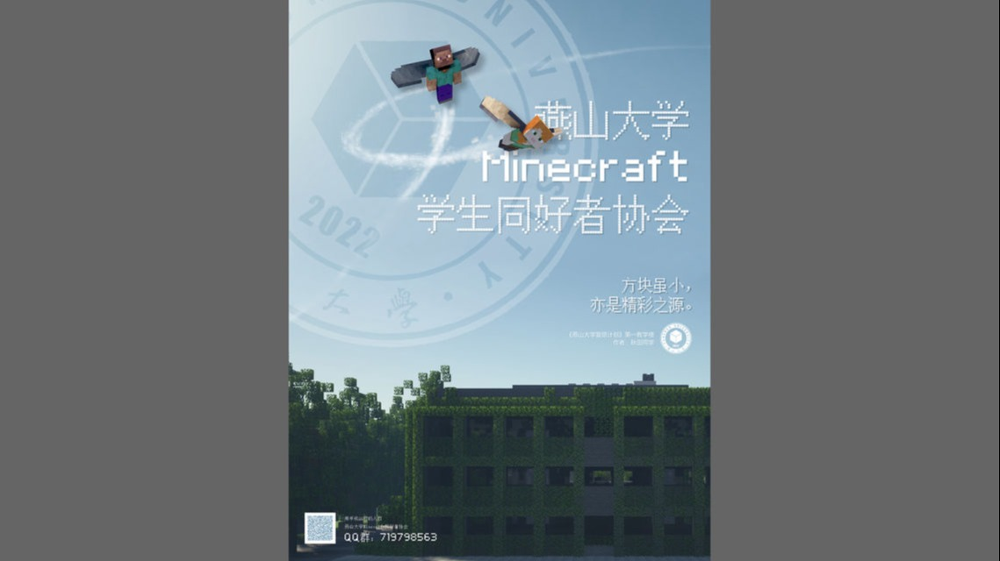
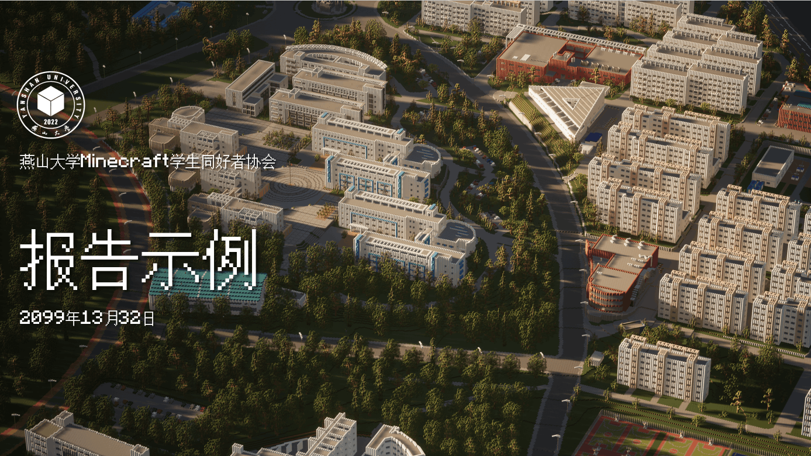
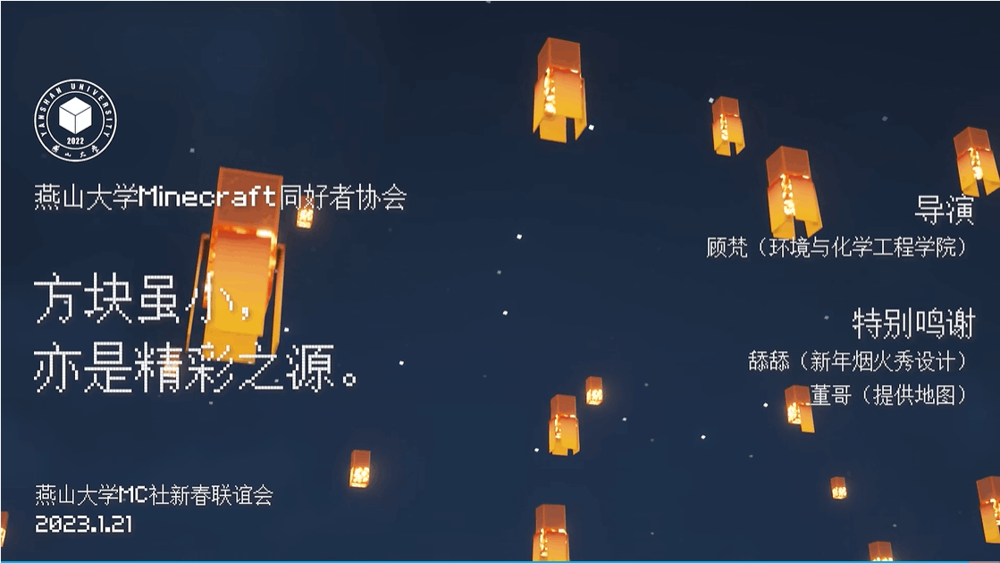

平面设计样例

燕山大学MC社官网概念设计方案

燕山大学MC社第一次招新海报

燕山大学MC社幻灯片版式（题目）

标准化的形象让社团独树一帜
视觉形象识别系统（Visual Identity System，缩写为VIS，简称VI）。燕山大学Minecraft学生同好者协会尝试通过统一化、系统化、规范化的视觉形象设计，让社团的视觉形象在长时间内保持稳定，以增强燕山大学MC社的整体形象和专业程度。
燕山大学Minecraft学生同好者协会会徽
燕山大学Minecraft学生同好者协会会徽是本社团的象征，整体继承自燕山大学2011腾飞版校徽的设计。中间是由三个菱形以120度中心对称形成的正六边形图案，代表“方块”，是Minecraft游戏的单位元。中心图案下方则是“2022”字样，代表社团成立年份为2022年。
社徽的中文字体取自王羲之书法集字，英文和数字的字体为Impact。
社徽为正圆形，不允许随意将标志变形使用！
C:100 M:100
Y:35 K:0
#0000a6
扁平化社徽和使用样例
在图片或视频上使用社徽时（例如为图片添加水印等），建议使用扁平化社徽，其设计和配色不会干扰到观者视线，能让其更加专注在对于图片主体的阅读上。
部分情况下，图片背景会让社徽难以识别，建议在复杂背景下为扁平化社徽设置右下45度角的正投影式的软阴影，让社徽更加易于识别。
在浅色背景下，可以酌情加深扁平化社徽的颜色，但在一般情况下，社徽不适用于黑稿。
若设计不采用燕山大学Minecraft学生同好者协会视觉规范的话（例如非本社团的平面设计），只允许使用一般社徽。
扁平化社徽不是一般社徽的反白稿版本，请使用正确的扁平化社徽！
扁平化社徽在视频上的使用样例（《像素燕大》宣传视频）
扁平化社徽在宣传图片上的使用样例（新春联谊会宣传图）
燕山大学Minecraft学生同好者协会标准外宣中文字体为GNU Unifont，标准外宣西文字体为Mojangles。二者搭配使用。
如果因为背景图片而导致字体难以识别，建议在复杂背景下为扁平化社徽设置右下45度角的正投影式的软阴影或让字体处的背景变暗，使其易于识别。
燕山大学Minecraft学生同好者协会的标语为：“方块虽小，亦是精彩之源。”（包括标点）建议将前后句置于两行上以凸显层次感，且行距应是字号的1.25倍，左图已给出样例。
当“燕山大学Minecraft学生同好者协会”与“方块虽小，亦是精彩之源。”同时出现时，建议前者字号小于等于后者的一半。
除文字类宣传外，燕山大学Minecraft学生同好者协会的平面设计遵循两个原则：弱化文字，强化图片。
除部分特殊要求外，社团内平面设计文字使用遵循社团内的外宣字体规范，并使用白色或黑色以弱化整体存在感，如果因背景图片原因导致字体难以识别，建议在复杂背景下为扁平化社徽设置右下45度角的正投影式的软阴影或让字体处的背景变暗，使其易于识别。
若背景图片是燕山大学MC社内的项目，可以在角落写下项目名和项目始末时间作为注释。
中国Minecraft高校联盟（(Minecraft University Alliance，简称MUA）是一个旨在联合中国高校Minecraft爱好者的公益性组织，燕山大学Minecraft学生同好者协会为该联盟成员组织之一。因此，当本社团需要对MUA进行外宣和展示时，对其规范展示和宣传非常重要。
注意：本规范为燕山大学Minecraft学生同好者协会单方面建议的规范。
MUA徽标在浅色背景下和深色背景下的使用方式
MUA徽标如左图，左侧是由红，绿，蓝色菱形构成的抽象“MUA”图案。右侧则是Misans字体构成的“MUA”字样。深色徽标只有右侧文字颜色与浅色徽标有所区别，其他部分一致。请根据背景的情况酌情使用深色徽标。
一般情况下，MUA徽标不能离开右侧“MUA”字样单独使用。
MUA徽标的一种特殊使用方式
如果因为某些原因不能保证MUA徽标在任何情况都是清晰可见的（例如在视频中展示徽标），无需在浅色徽标和深色徽标之间来回切换，此时可以对深色徽标进行薄白色外部描边以增大其可见性。
除上述特殊情况外，任何需要使用MUA徽标的平面设计都需要尽量避免使用描边徽标！
中国Minecraft高校联盟因其“联合”的性质，并不适合采用单一的颜色来代表其形象。所以，本社团建议使用MUA徽标中的红，绿，蓝三种颜色来代表MUA的视觉形象。
MUA三大标准宣传色为：MUA红，MUA绿，MUA蓝。
其中外宣用字体使用“MUA外宣黑”作为标准灰度颜色。
以下颜色可以酌情减淡加深或与同色系颜色搭配使用。
C:6 M:96
Y:73 K:0
#ed1438
C:66 M:0
Y:80 K:0
#00e060
C:68 M:0
Y:0 K:0
#00bdff
C:76 M:72
Y:70 K:39
#3e3a39
#3e3a39
#3d3d3d
一个简单的MUA展示模板
MUA外宣官方中文字体和西文字体均为Misans，只允许使用Medium以上的字重。
MUA宣传的标语，本社建议为“我们联合”（无标点）。本标语内容与MUA的精神相近。
如果设计中需要标语，建议与徽标搭配，主标语要成为视觉核心，字间距为-25，徽标可以放在标语一侧或上方，徽标高度大约为字体高度的1/3~1/4，颜色为MUA外宣黑。
配色方面，建议使用本社提供的装饰标准色号，色号可以减淡或加深。
当MUA需要在非官方发布场合进行外宣展示时（例如其成员社团发布项目），建议在主标题左下角根据背景颜色添加MUA徽标，以示该项目为MUA负责或MUA参与共同制作的项目。
当项目是成员组织或其他个人为主策划时，即使MUA参与共同制作，成员组织仍有权利不予在标题左下角添加MUA徽标（但请注意：此规定不会影响MUA对此项目的性质判断）。
一个MUA和本社社徽同时出现的情况示例
如果本社社徽与MUA徽标共同出现，则MUA徽标需要上文基础上，按照本社徽标识别处理方式进行相同的处理（例如同时设置右下45度正投影软阴影）。
MUA徽标与本社社徽同时展示时，按照组织责任从左向右排序。在左图示例中，MUA在该场景中话语权更大，若两徽标对调，则是本社团话语权更大。
建议两个徽标同时展示时使用横向排列。MUA徽标水平中线需过社徽圆心，MUA徽标高度大约为社徽高度的1/2~1/3。
若设计不采用燕山大学Minecraft学生同好者协会视觉规范的话（例如非本社团的平面设计），只允许使用一般社徽。
为什么要很严肃地规定燕山大学MC社的视觉识别形象呢？因为社团创始人坚信：“只有将小事做好，大事才能够做好。”
准确的视觉识别方案不仅可以让旁人一眼便可知晓：“这是燕山大学MC社的设计”，也可以在无形中端正每一名正式社员的工作态度，让他们知道自己对外的行为将代表MC社而存在，在这种可能他人眼中不足挂齿的小事中端正自己的态度，便能在更大的事务中保持一丝不苟，而这便是我们的魅力所在。

Made with
No Code Website Builder